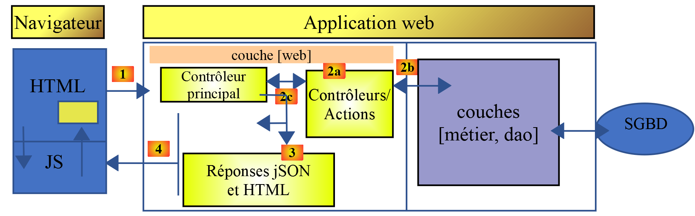

1. Introduction to the VUE.JS framework
The PDF for this document is available |HERE|`.
The examples in this document are available |HERE|.
This document is part of a series of four articles:
- |Introduction to the ECMASCRIPT 6 language through examples| ;
- |Introduction to the VUE.JS framework through examples|. This is the current document;
- |Introduction to the NUXT.JS framework through examples|;
These are all documents for beginners. The articles follow a logical sequence but are loosely coupled:
- the document [1] introduces the PHP 7 language. Readers interested only in the PHP language and not in the Javascript language covered in the following articles will stop here;
- the [2-4] documents are all intended to build a Javascript client for the tax calculation server developed in the [1] document;
- the Javascript, [vue.js], and [nuxt.js] frameworks in Articles 3 and 4 require knowledge of the Javascript from the latest versions ofECMASCRIPT, and those of version 6. The [2] document is therefore intended for those who are not familiar with this version from JavaScript. It refers to the tax calculation server built in document [1]. Readers of [2] will therefore sometimes need to refer to document [1];
- once ECMASCRIPT 6 has been mastered, we can move on to the VUE framework.JS, which allows you to build clients and Javascript that run in a browser in SPA mode (Single Page Application). This is the [3] document. It references both the tax calculation server built in the [1] document and the standalone client code JavaScript built in [2]. Readers of [3] will therefore sometimes need to refer to documents [1] and [2];
- once VUE.JS has been mastered, we can move on to the NUXT framework.JS, which allows you to build clients and Javascript that run in a browser in SSR mode (Server Side Rendered). It refers both to the tax calculation server built into the [1] document, the standalone client code Javascript built in [2], and the application [vue.js] developed in the document [3]. Readers of [4] will therefore sometimes need to refer to documents [1], [2], and [3];
The latest version from the tax calculation server, developed in document [1] (see document |Introduction to the PHP7 language through examples (2019)|) can be improved in various ways:
- The version script is server-centric. The current trend (as of September 2019) is toward client/server architecture:
- the server runs as a jSON service;
- a static or dynamic page serves as the entry point for the web application. This page contains HTML /CSS as well as JavaScript;
- the other pages of the web application are generated dynamically by JavaScript:
- the HTML page can be generated by assembling static or non-static fragments, provided by the same server that served the entry page, or constructed by the client’s Javascript;
- these different pages display data requested from the jSON service;
Thus, the work is distributed between the client and the server. The server, having been offloaded, can serve more users.
The architecture corresponding to this model is as follows:

JS: JavaScript
The browser is a client:
- a service providing static or non-static pages or fragments (not shown above);
- a data service jSON;
The code JavaScript is therefore a client of jSON and, as such, can be organized into layers [UI, métier, dao] (UI: User Interface) just as our clients and jSON were written in PHP. Ultimately, the browser loads only a single page, the home page. All others are retrieved and constructed by the JavaScript. This type of application is called SPA: Single Page Application or APU: Single-Page Application.
This type of application is also classified as AJAX: Asynchronous Javascript and XM:
- Asynchronous: because the client’s calls to the server are asynchronous;
- XML: because XML was the technology used before the advent of jSON. However, the acronym AJAX was retained;
We will examine such an architecture in this document. On the client side, we will use the Javascript [Vue.js] [https://vuejs.org/] framework to write the Javascript client for the jSON PHP, which we wrote in the document [1].
[Vue.js] is a framework JavaScript. We introduced the Javascript language in the document [2]. We will not conduct an exhaustive study of the [vue.js] framework. We will simply present the concepts that will be used later in writing a [Vue.js] client for the version jSON of the version 14 tax calculation server(see |https://tahe.developpez.com/tutoriels-cours/php7|).
The scripts in this document are commented, and their console output is reproduced. Additional explanations are sometimes provided. The document requires active reading: to understand a script, you must read its code, its comments, and its execution results.
The examples in this document are available |here|.
The PHP 7 server application can be tested |here|.
Serge Tahé, October 2019